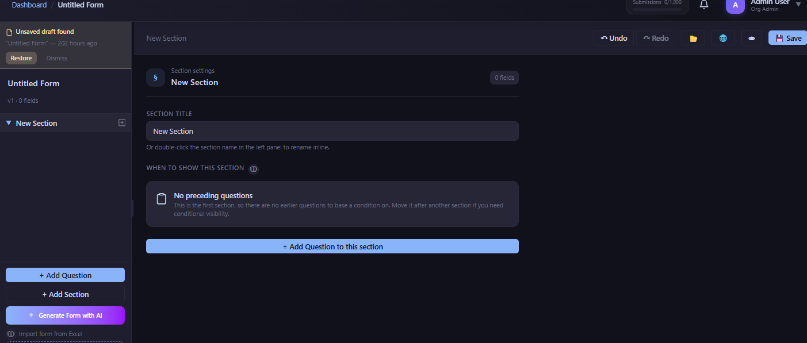

Every impact evaluation rests on a simple promise: the change you measure between baseline and endline reflects the effect of the programme, not the effect of something else that changed along the way. That promise is far more fragile than most teams realise. A baseline and an endline are, in practice, two separate data collection exercises — run months or years apart, often by different field staff, sometimes using a form that has been "lightly updated" in between. Any one of those differences can introduce a gap between what you measured and what you meant to measure, and that gap shows up in your results as if it were programme impact.
This article walks through the five mistakes we see most often in baseline-endline study design — not exotic statistical errors, but ordinary, avoidable slips in instrument management and fieldwork planning. It closes with a practical checklist for locking a baseline instrument before endline fieldwork begins, which is the single highest-leverage habit a research team can adopt.
Why Baseline-Endline Comparisons Break So Easily
A household survey instrument is a complex artifact: dozens of questions, each with specific wording, response options, skip logic, and a reference period ("in the last 7 days," "in the last agricultural season"). For a pre-post comparison to be valid, everything about how you ask the question has to stay constant except the thing you're trying to measure — time, and exposure to the programme. In practice, research teams treat the endline as a chance to "improve" the form: fix a typo, reorder some options, add a category someone requested. Each change feels harmless in isolation. Collectively, they erode the comparison the entire evaluation depends on.
A perfectly executed endline survey is worthless for impact measurement if it isn't comparable to the baseline. Data quality at each round is necessary but not sufficient — comparability across rounds is the thing that actually makes the evaluation valid.
Five Mistakes That Undermine Impact Evaluation Validity
1. Instrument Drift Between Baseline and Endline
This is the most common and most invisible mistake. Somewhere between baseline and endline, someone edits the form. A question that asked "How many days did you work for wages in the last 7 days?" becomes "in the last month" because a field supervisor felt the shorter recall period produced noisy answers. A response scale that was "Yes / No / Don't Know" at baseline loses the "Don't Know" option at endline because the team wanted cleaner analysis. A five-point satisfaction scale gets relabelled from numbers to words. None of these changes are recorded as a formal decision — they happen in a shared document, get pushed to the field team, and nobody flags that the baseline and endline data are no longer strictly comparable on that indicator.
The danger is that instrument drift rarely breaks your analysis outright — it just adds noise or bias that looks exactly like a real programme effect. A shift in a wellbeing scale's midpoint label can move average scores by a meaningful margin with zero change in actual respondent wellbeing.
2. Different Enumerators or Different Seasons
Household surveys are administered by people, and people introduce variation. If your baseline enumerator team is different from your endline team — different training cohort, different average experience level, different familiarity with the study area — you introduce an "interviewer effect" that is confounded with time. The same risk applies to timing: if baseline was fielded post-harvest and endline was fielded during the lean season, any indicator sensitive to seasonality (income, food security, migration status) will show a "change" that has nothing to do with your programme.
Good practice is to field endline with as much overlap in enumerator team composition as feasible, and to deliberately match the calendar window — same month, same point in the agricultural or academic cycle — rather than simply targeting "12 months after baseline" without checking what that date falls on.
3. Missing a True Counterfactual
A pre-post design — measuring the same group before and after a programme, with no comparison group — cannot distinguish programme effect from everything else that changed over the same period: seasonal trends, other programmes operating in the same area, general economic conditions, or simple regression to the mean. Without a control or comparison group that did not receive the programme (ideally through randomisation, or failing that, a credible quasi-experimental design such as matching or difference-in-differences), a change observed between baseline and endline tells you very little about causal impact, no matter how carefully the instrument was administered.
This mistake is a design-stage decision, not a fieldwork error, but it interacts with everything else in this article: if you don't have a counterfactual, get the instrument comparability right anyway — donors and academic reviewers will still expect it, and a future re-analysis with a constructed comparison group depends on baseline and endline data being genuinely comparable.
4. Indicators Not Pre-Registered Before Data Collection
Without a pre-specified list of primary and secondary indicators, it is tempting — even unconsciously — to report whichever indicators show a statistically significant change at endline, out of the dozens collected. This is the multiple-comparisons problem in practice: test enough outcomes and some will appear significant by chance alone. Pre-registering your primary indicators (on a platform like OSF, AsPredicted, or your funder's own registry) before endline data collection begins, and ideally before baseline, forces the discipline of deciding in advance what "success" looks like — and makes your eventual findings credible to reviewers who will otherwise wonder what else you measured and didn't report.
5. Attrition Not Tracked Systematically
If a meaningful share of your baseline respondents cannot be found at endline, and you have not tracked who they are and why they're missing, you cannot rule out differential attrition — a systematic difference between who stayed in your sample and who dropped out. If the people your programme didn't help are also the people most likely to have moved away or stopped responding, your endline sample is quietly biased toward people the programme worked for, and your impact estimate will be inflated. This requires the same wave-status discipline used in panel studies: record a definitive status for every baseline respondent at endline (interviewed, not found, refused, deceased, migrated), not just a completion count.
Mistake, Consequence, Fix
| Mistake | Consequence | Fix |
|---|---|---|
| Instrument drift | Apparent change that is really a measurement artifact | Version-lock the form; log every deviation with a reason |
| Different enumerators/season | Interviewer or seasonal effect confounded with time | Match enumerator composition and calendar window across rounds |
| No counterfactual | Cannot separate programme effect from secular trend | Build in a control/comparison group at design stage |
| Indicators not pre-registered | Multiple-comparisons bias; cherry-picked findings | Pre-register primary/secondary indicators before endline |
| Attrition untracked | Silent selection bias in the endline sample | Record a definitive wave status for every baseline respondent |
What "Locking" a Baseline Instrument Actually Means
"Lock the instrument" is easy advice to give and hard to operationalise without the right tooling. In practice it means four things happening together:
Version Control on the Form
The exact form used at baseline — every question, option, and skip-logic rule — needs to exist as a retrievable, timestamped snapshot, not a Word document someone remembers editing. If your endline form needs a change (and sometimes it legitimately does — a question that made no sense in a new district, for instance), that change should be visible as a diff against the baseline version, not buried in a fresh form nobody compared against the original.

FieldGovern's Form Builder keeps a full version history for every form — each publish creates a snapshot, and version diffs show exactly what changed between any two versions, question by question. For a baseline-endline study, this means your endline team can pull up the exact baseline version, confirm the wording, response options, and skip logic are unchanged, and if a deviation is genuinely necessary, document it against a specific version rather than losing the change in institutional memory.
Freezing Exact Question Wording
Once baseline is fielded, the exact text of every indicator-relevant question should be treated as fixed. If a translation needs correction, that correction should be applied to both the baseline archive and the endline form identically, and logged — not silently patched only in the endline version.
Matching Season and Reference Period
Lock the reference period for every recall-based question (income, food consumption, health events) to the same length and, where possible, the same season across rounds. If baseline asked about "the last agricultural season," endline should reference the equivalent season, not a fixed calendar window that happens to land differently.
Documenting Any Deviations
When a deviation from the baseline instrument is unavoidable, write down what changed, why, and what it means for comparability of that specific indicator — before fieldwork, not after a reviewer asks. This single habit is what separates a defensible evaluation from one that gets its results questioned during peer review or donor audit.
Locking a Baseline Instrument: A Checklist
None of this eliminates the need for good statistical practice — pre-analysis plans, appropriate estimators, robustness checks. But statistics cannot recover a comparison that the instrument itself made impossible. The cheapest place to protect the validity of an impact evaluation is at the point where the endline form gets built, not at the point where the results get written up.
Build Your Baseline Once, Lock It, Reuse It
FieldGovern's Form Builder keeps a full version history and diff view for every form, so your endline instrument can be checked against baseline before a single household is visited. Start a free trial to see it on your own study.
Start Free Trial